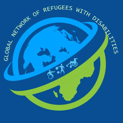
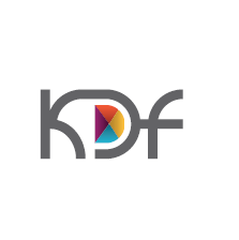
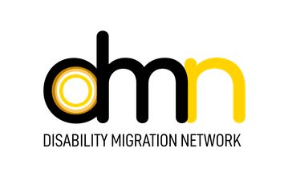
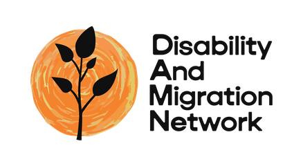

A first-of-its-kind global forum
Migration systems can be disabling. They don't have to be.
The Global Forum on Disability, Migration and Forced Displacement brings together people affected by migration governance, persons with disabilities, and those working in the systems that affect them — convened and led by organisations of persons with disabilities (OPDs).
Register your interest (opens in a new tab)About the forum
Migrant workers and refugees with disabilities remain marginalised within mainstream migration and refugee governance. The intersection of disability and migration is insufficiently understood and inadequately addressed across policy, programming and global review processes.
Persons with disabilities face compounding barriers: legal status, the medicalisation and stigmatisation of disability, and access to regular pathways, decent work, essential services, protection and justice. These are structural barriers, not individual misfortunes — and without disability-responsive approaches to how disability is conceptualised and legislated for, they will deepen.
A newly formed transnational consortium of four disability-led and disability-focused migration networks — spanning Asia, Africa and Europe — is convening this forum to advance evidence, social dialogue and practical solutions that support implementation of the Convention on the Rights of Persons with Disabilities (CRPD), International Labour Standards, refugee-related initiatives, the Global Compact for Safe, Orderly and Regular Migration (GCM) and the Global Compact on Refugees (GCR).
Why now
A gap between commitment and lived reality
International frameworks provide foundations for protecting persons with disabilities on the move, including the CRPD, International Labour Standards, the Migrant Workers Convention and the 1951 Refugee Convention, alongside the GCM and the GCR. Yet disability remains inconsistently integrated and routinely deprioritised across governance frameworks and operational practice.
Too often, disability is treated as an individual vulnerability rather than a crosscutting governance issue requiring structural reform. Across both labour migration and forced displacement, persons with disabilities can face barriers in recruitment, admission, employment, protection, assistance and access to services. Coordination between disability, labour migration and refugee actors remains fragmented, while disability-disaggregated data is inadequate, weakening evidence-informed policy and accountability.
Disability can also be acquired or exacerbated during migration and displacement, including through violence, detention, trafficking, disrupted healthcare and precarious working or living conditions. For refugees, both the journey and the restrictions imposed on people on arrival can be disabling. Migration and refugee systems do not always recognise or respond to these experiences, while people with pre-existing and acquired disabilities can face different barriers throughout their journeys.
16 in every 100 people worldwide have a disability — about 1.3 billion people.
Figures drawn from International Labour Organization (2026) Technical report on fair recruitment of migrant workers with disabilities (opens in a new tab). The overlap between these populations is unknown, and remains under-recognised in policy design, data systems and global review processes.
The timing is deliberate. The twentieth anniversary of the CRPD converges with the International Migration Review Forum in May 2026, the subsequent Global Refugee Forum cycle, and the annual International Labour Conference. That convergence is a strategic window to move from recognition to implementation.
Objectives
What the Forum aims to do
Central to the forum is addressing how disability discrimination and ableism become embedded in labour migration and asylum laws, procedures and institutions — and identifying the practical reforms that remove them.
-
Connect international frameworks
Explore how the CRPD, International Labour Standards, refugee frameworks and other migration governance frameworks relate to persons with disabilities.
-
Make the disabling impact visible
Share evidence and lived experience of how labour migration and refugee policies, procedures and systems affect persons with disabilities.
-
Centre lived experience and OPD perspectives
Support the meaningful participation of OPDs — including those led by migrants and refugees with disabilities — across labour migration and refugee governance.
-
Generate actionable measures
Highlight approaches, practical reforms and areas for future action across labour migration and refugee governance.
Agenda
Five sessions across two days
Each session will include contributions from experts by experience and people working in solidarity, with time for discussion. Interpretation, International Sign and live captioning will run throughout.
Day 1 Wednesday, 23 September 2026
08:00–10:00 Session 1 · Historical overview of disability and migration
Situating today's challenges in their historical and legal context. The session examines freedom of movement, displacement and refugee protection through the social and human rights models of disability, and traces how a legacy of discrimination and systemic inequities shape the struggles of persons with disabilities today, and how international labour, disability and refugee frameworks can be interpreted to drive change.
Moderated by Catalina Devandas Aguilar, former UN Special Rapporteur on the Rights of Persons with Disabilities
| Time | Item |
|---|---|
| 08:00–08:07 | Housekeeping and welcome from the moderator |
| 08:07–08:14 | Opening remarks from the Philippines USEC Atty. Darlene R. Pajarito · Department of Migrant Workers (DMW) |
| 08:14–08:17 | Testimony — refugee (video) |
| 08:17–08:20 | Testimony — migrant worker (video) |
| 08:20–08:30 | Understanding disability in the migration landscape: historical exclusion Ben Thatcher · Disability Migration Network (DMN) |
| 08:30–08:50 | Refugee protection and labour migration through the CRPD Amalia Gamio · UN CRPD Committee |
| 08:50–08:55 | Comfort break |
| 08:55–09:15 | Refugee protection and disability Leana Podeszfa · UN Refugee Agency (UNHCR) |
| 09:15–09:35 | International Labour Standards with disability and labour migration Katerine Landuyt · International Labour Organization (ILO) |
| 09:35–10:00 | Q&A and discussion |
10:00–10:30 Halfway break
10:30–12:30 Session 2 · Labour migration governance and disability in practice
Evidence on the barriers migrant workers with disabilities and acquired disabilities face across recruitment, regularisation, employment, occupational safety and health, access to justice and social protection — drawing on cases from ASEAN, Australia, South Korea and Poland.
Moderated by Rebecca Napier-Moore, ILO TRIANGLE in ASEAN
| Time | Item |
|---|---|
| 10:30–10:39 | Housekeeping and welcome from the moderator |
| 10:39–10:42 | Testimony — migrant worker (video) |
| 10:42–10:45 | Testimony — migrant worker (video) |
| 10:45–11:05 | Disability dimensions of labour migration in ASEAN Ben Thatcher · Disability Migration Network (DMN) |
| 11:05–11:25 | How migration policy intersects with broader disability inclusion in Australia Matthew Hall · Australian Federation of Disability Organisations (AFDO) |
| 11:25–11:30 | Comfort break |
| 11:30–11:50 | Access to justice for migrants with disabilities in South Korea Jueon Lee · Duroo – Association for Public Interest Law |
| 11:50–12:10 | Disability and labour migration in Poland Dr Eva Anna Duda-Mikulin · University of Wrocław |
| 12:10–12:30 | Q&A and discussion |
Day 2 Thursday, 24 September 2026
08:00–09:30 Session 3 · Lessons from the disability movement for labour migration and refugee justice
Practical training for OPDs, including migrant- and refugee-led organisations, on engaging with migration and refugee governance structures — advocacy strategy, policy engagement, and participation in global review and follow-up processes.
Moderated by Atty. Rhealeth Ramos, National Council on Disability Affairs (NCDA)
| Time | Item |
|---|---|
| 08:00–08:10 | Housekeeping and welcome from the moderator |
| 08:10–08:20 | Keynote José Maria Viera · International Disability Alliance (IDA) |
| 08:20–08:25 | Testimony — migrant worker (video) |
| 08:25–08:30 | Testimony — refugee (video) |
| 08:30–08:40 | OPDs and migrant resource centres Mak Monika · Cambodian Disabled People's Organization (CDPO) |
| 08:40–08:50 | Building network capacity Julius Ntobuah · Global Network of Refugees with Disabilities (GNRD) |
| 08:50–08:55 | Comfort break |
| 08:55–09:05 | A view from South America Rosa Maria · RIADIS |
| 09:05–09:30 | Q&A and discussion |
09:30–10:00 Break
10:00–11:30 Session 4 · Disability in refugee camps in the Global South
Camp governance, access to services and participation, told first by refugees with disabilities from Africa and the Middle East and then examined through humanitarian programming, protection and localisation.
Moderated by Julius Ntobuah, Global Network of Refugees with Disabilities (GNRD)
| Time | Item |
|---|---|
| 10:00–10:07 | Housekeeping and welcome from the moderator |
| 10:07–10:10 | Testimony — refugee (video) |
| 10:10–10:20 | Living in a refugee camp: a speaker from Africa on services and participation |
| 10:20–10:30 | Displacement and camp governance: a speaker from the Middle East on resilience and leadership |
| 10:30–10:45 | Persons with albinism on the move Muluka-Anne Miti-Drummond · UN Independent Expert |
| 10:45–10:50 | Comfort break |
| 10:50–11:15 | Disability-inclusive humanitarian programming, and refugee governance, participation and localisation |
| 11:15–11:30 | Q&A and call to action |
11:30–12:00 Break
12:00–13:30 Session 5 · Understanding and resisting disabling immigration and asylum systems in the Global North
How border regimes, procedures and institutional arrangements disable the people moving through them — both those already disabled when the journey begins and those the system disables along the way, with contributions from members of the Disability and Migration Network (DAMN) in the UK and the Disability and Immigration Taskforce of Illinois (DITI) in the USA. We will explore: the current context and how we got here; the disabling impact of immigration policy that prevents access to essential services and support; collective action and resistance supporting people's survival; and how to increase solidarity and build alternatives to current disabling systems.
Moderated by Rebecca Yeo, Disability and Migration Network (DAMN)
| Time | Item |
|---|---|
| 12:00–12:10 | Housekeeping and welcome |
| 12:10–12:20 | The current context and how we got here |
| 12:20–12:30 | Disabling immigration policies Disabled people describe experiences of restrictions imposed as part of immigration policy that prevent access to essential services and support |
| 12:30–12:45 | Collective action, organising and resistance in the USA Disabled people organising in response to immigration raids in the USA |
| 12:45–12:50 | Comfort break |
| 12:50–13:00 | Disabled people surviving through solidarity in the UK asylum system |
| 13:00–13:30 | Open discussion across borders How to increase solidarity and build alternatives to current disabling systems |
Format
- Fully online across two mornings, Central European Time
- Sessions of 90 to 120 minutes, with comfort breaks throughout
- Recorded testimony from migrants and refugees with disabilities opens every session
- Programme still being finalised — some speakers to be announced
Who attends
- Migration and refugee policymakers, practitioners and government representatives
- UN agencies and international organisations
- Employers' and workers' organisations
- Researchers, policy experts and donors
- OPDs, migration and refugee civil society organisations, and migrants and refugees with disabilities
- Allies and movement organisers
Speakers and moderators
Who you'll hear from
Treaty body members, UN mandate holders, ILO specialists, public interest lawyers and OPD leaders — alongside refugees and migrant workers with disabilities speaking to their own experience. Every name here also appears in the agenda above.
-
Speakers to be announced
Session 4 · two refugees with disabilities, from Africa and the Middle East, and a specialist on disability-inclusive humanitarian programming and refugee governance.
-
Contributors from DAMN and DITI
Disability and Migration Network (UK) · Disability and Immigration Taskforce of Illinois (USA)
Session 5 · several speakers' names and identities are withheld for safety reasons.
From dialogue to action
What the forum produces
The Forum aims to move beyond discussion towards practical action. Participants will identify key priorities, barriers and opportunities for change, with these contributions informing a Call to Action on disability, migration and forced displacement following the Forum.
The consortium
Four networks. Three regions. One agenda.
This will be the first global event on disability in labour migration and refugee governance designed, convened and led by OPDs — including networks representing migrants and refugees with disabilities themselves. Lived experience is not consultative here; it sets the agenda.
-

Global Network of Refugees with Disabilities
GNRD · Focal point: Julius Ntobuah
Empowers refugee-led organisations to access advocacy opportunities at national, regional and global levels and to raise funds for their initiatives, amplifying their voices in global policy and humanitarian response.
gnrd.ngo (opens in a new tab) -

Korean Disability Forum
KDF · Focal point: Hanbyol Choi
An umbrella organisation of 18 national disabled people's organisations. KDF monitors national implementation of UN human rights treaties, in particular the CRPD, and bridges DPOs across borders.
thekdf.org (opens in a new tab) -

Disability Migration Network
DMN · Focal points: Dr. Jun Bernandino, Karla Henson, Ben Thatcher
An OPD-led network advancing disability-responsive migration in policy and practice, focused on the right to freedom of movement for persons with disabilities.
disabilitymigrationnetwork.com (opens in a new tab) -

Disability and Migration Network
DAMN · Focal point: Rebecca Yeo
A network of Disabled People's Organisations, migrant justice organisations and allies. Working collaboratively we share experiences and knowledge, seeking to build solidarity and resistance to the disabling impact of restrictions imposed on people with precarious migration status.
disability-migration.org.uk (opens in a new tab)
Accessibility
Participation is the point
A forum about disabling systems cannot itself be one. Access provisions are built into the forum's design and budget from the start, not added on request.
At the forum
- International Sign interpretation with rotating interpreters
- Professional live captioning across all sessions
- Accessible online hosting with technical support
Interpretation into ten languages
- Spanish
- French
- Arabic
- Swahili
- Korean
- Vietnamese
- Thai
- Lao
- Myanmar
- Khmer
On this site
Built to WCAG 2.2 AA. Everything sits on one page, with keyboard-navigable landmarks, visible focus indicators, and no motion for anyone who has asked their system to reduce it.
If something here is not working for you, tell us and we will fix it.
Register your interest
Be first to know when registration opens
The forum is free to attend. Leave your details and we will send you the agenda, registration link and access arrangements as soon as they are confirmed.